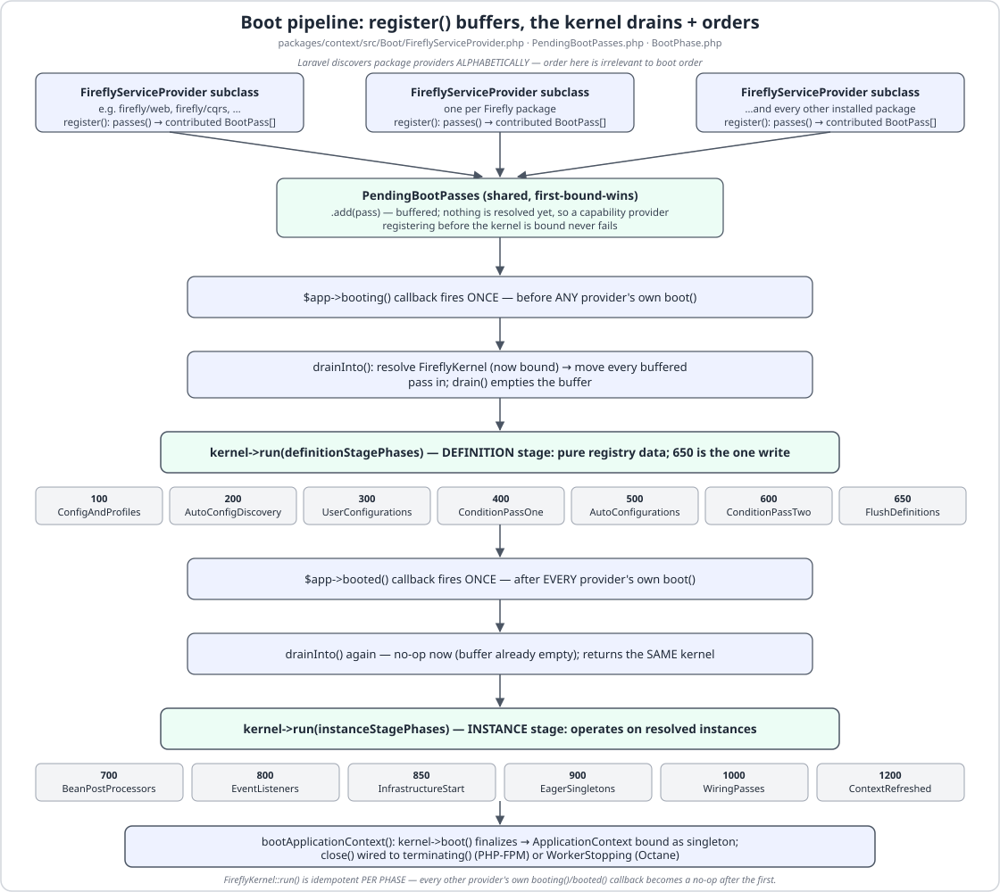
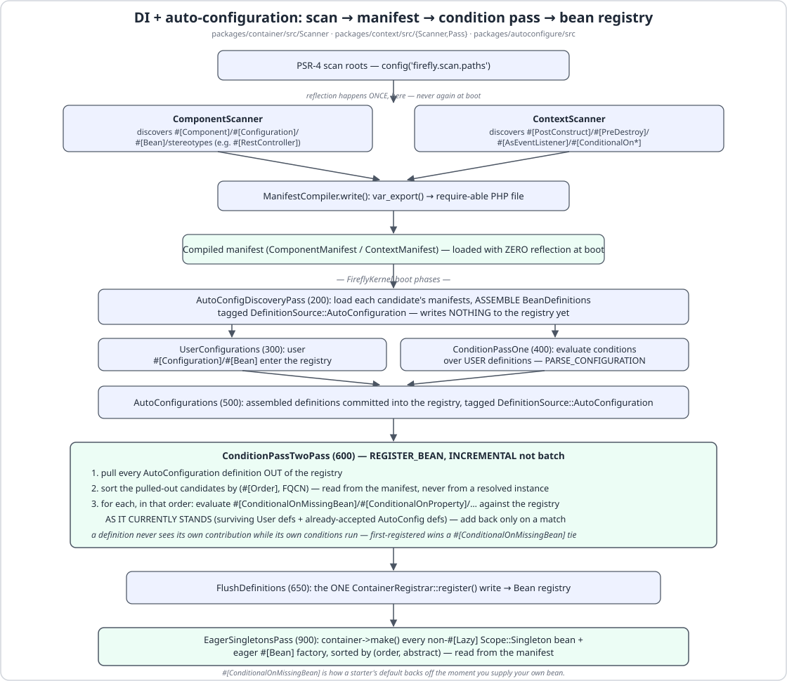
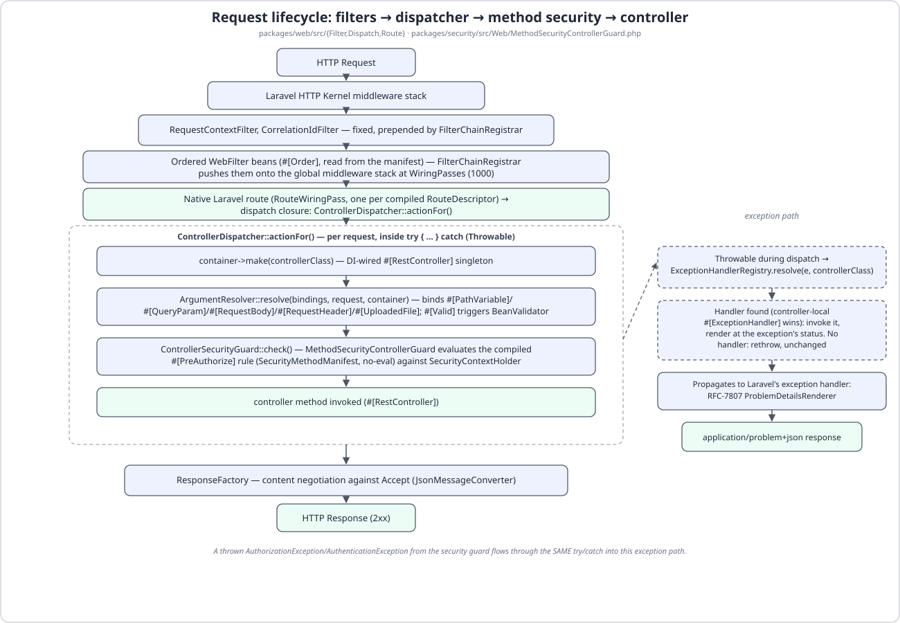
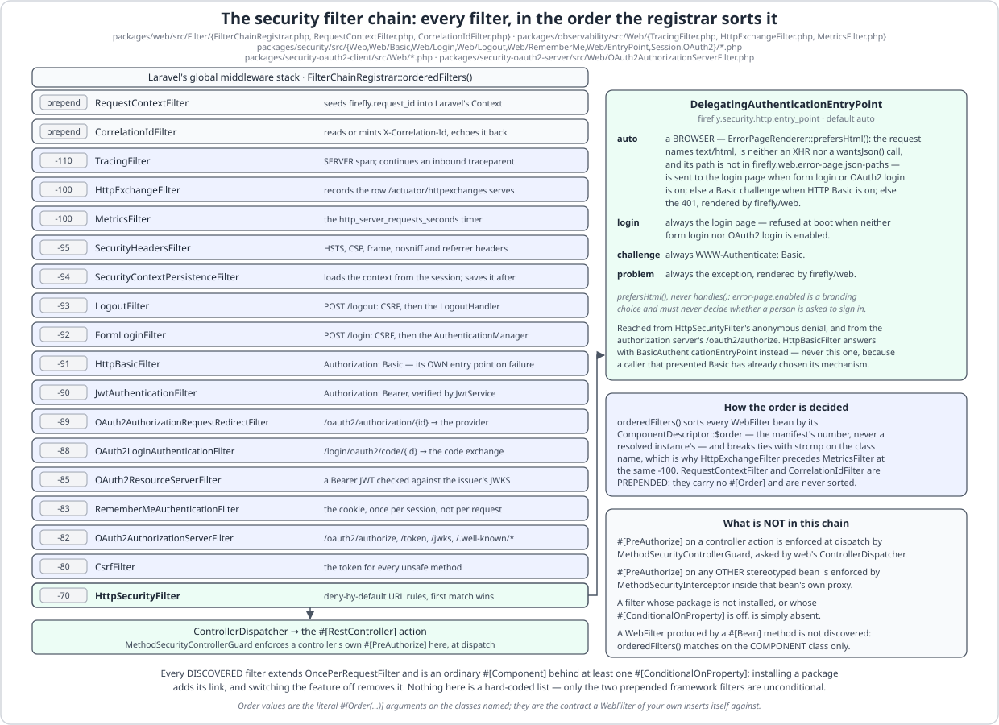
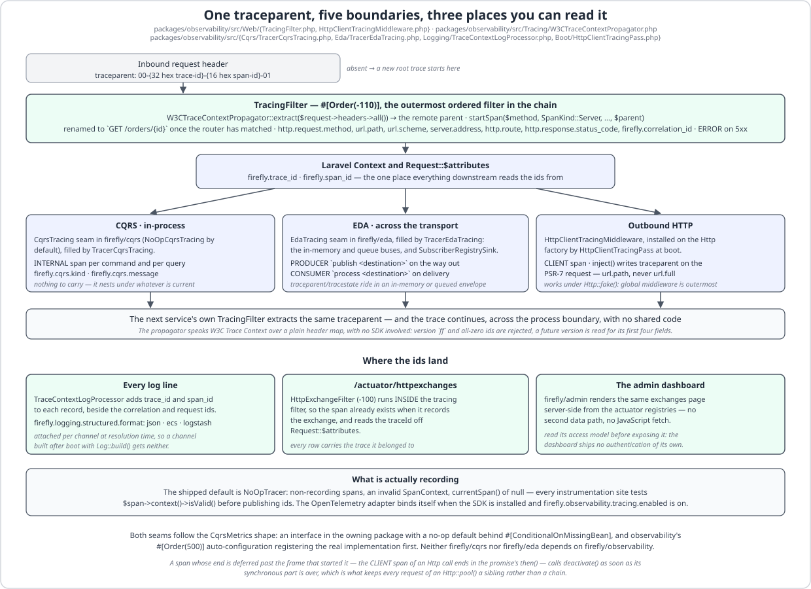

Architecture¶
LaraFly is hexagonal: every subsystem exposes a nominal PHP interface (a port) and one or more adapters. Domain and application code depend only on ports. Architectural direction is enforced with Deptrac.
Everything below is a description of code in this repository, and every class, attribute, order value and
configuration key named here is checked by a test — tests/DocsCodeIsRealTest.php holds every listing on this
page to the file it claims to come from, and tests/DocsDiagramsTest.php holds the diagrams to the
attributes they draw.
The boot pipeline¶
Every capability package plugs into one shared FireflyKernel through FireflyServiceProvider: a
provider's register() only buffers its BootPass contributions (into PendingBootPasses) — it never
resolves the kernel itself, so Laravel's alphabetical package-discovery order can never affect boot order.
The kernel drains that buffer and decides the real order, phase by phase:

The phases are the contract. A component scan discovers stereotyped classes; auto-configuration candidates
are discovered at phase 200 and committed at phase 500, tagged DefinitionSource::AutoConfiguration; a
#[ConditionalOnMissingBean(X)]-guarded #[Bean] survives back-off at phase 600 only if nothing else
already registered an X; and the wiring passes at phase 1000 turn the compiled manifests into real Laravel
routes, middleware, listeners and scheduled tasks. Because back-off happens after every definition is on the
table, your own bean wins regardless of which provider Laravel instantiated first.
The kernel layer¶
firefly/kernel is the zero-dependency foundation:
Firefly\Kernel\Lifecycle— thestart()/stop()contract for infrastructure adapters.Firefly\Kernel\Exception\*— a product-agnostic typed exception taxonomy.Firefly\Kernel\Error\*— the RFC-7807ErrorResponsemodel.Firefly\Kernel\Exception\Infrastructure\*— theDataAccessExceptionfamily, Spring's ported into PHP. This is whatfirefly/data'sPersistenceExceptionTranslatorthrows. It reads the driver's own error code first and the SQLSTATE second —DriverErrorTableholds both tables, because the same SQLSTATE hides different failures — and produces exactly eight kinds:DuplicateKeyException,DataIntegrityViolationException,DeadlockLoserDataAccessException,CannotAcquireLockException,QueryTimeoutException,TransientDataAccessResourceException,DataAccessResourceFailureExceptionandBadSqlGrammarException, with a genericDataAccessExceptionfor a code neither table classifies. It is applied at three seams and nowhere else — everyEloquentRepositorymethod,TransactionTemplate::execute(), and every#[Transactional]proxy, which delegates to that template — so a rawDB::call outside all three still throws Laravel'sQueryExceptionexactly as before, andfirefly.data.exception-translation.enabledturns the translation off wholesale. Two members of the family never come from a driver code at all:firefly/dataraisesOptimisticLockException(a subclass ofOptimisticLockingFailureException) from theHasOptimisticLockversion check when the guardedUPDATEmatches zero rows, andEmptyResultDataAccessExceptionfromgetById(), theorElseThrow-shaped finder. Each member carries the HTTP status its failure implies — a duplicate key is the client's 409, an unreachable database the platform's 503, a missing row its 404 — soproblem+jsonneeds no per-controller mapping. The translated message is a fixed sentence; the driver's own text, which has the statement and its bindings interpolated into it, stays onpreviousfor the log and never reaches the wire.Firefly\Kernel\Version— the CalVer constant every other package agrees with.tests/VersionConsistencyTest.phpchecks it against the CHANGELOG's latest heading and the README's version badge, so the three cannot drift apart.
Its composer.json requires nothing but php: ^8.3, and no file under packages/kernel/src imports
Illuminate\* or Symfony\*. That is what makes it safe for a domain package to reuse the exception
taxonomy without acquiring a framework dependency — and it is the reason deptrac.yaml can write the
Kernel layer's rule as ~.
Ports and adapters, enforced¶
The rule that domain code depends only on ports is not a convention here; it is a build step.
deptrac.yaml declares one layer per package — 28 of them, each collecting packages/<name>/src/.* —
and then a ruleset that gives, for every layer, the complete list of layers it is allowed to reference.
Anything not on that list is a violation, and composer check runs deptrac analyse as its fourth step, so
a use statement pointing the wrong way fails the gate rather than a review.
- name: Domain
collectors:
- type: directory
value: packages/domain/src/.*
# …
Domain:
- Kernel
# …
Data:
- Kernel
- Container
- Config
- Context
- AutoConfigure
- Domain
Read those two rules together and the direction is unambiguous: Data may see Domain, and Domain may
see nothing but Kernel. There is no entry anywhere in the ruleset that lets an aggregate reach for a
repository adapter, an Eloquent model or an HTTP request. Read the ruleset the other way and the leaves fall
out too: Admin, OpenApi, Cli, Testing, Installer and the three broker adapters (EdaRabbitmq,
EdaPostgres, EdaKafka) appear in no other layer's list at all, so nothing in the framework depends on
them and each can be added or dropped without touching the rest. Two layers have ~ for a rule — Kernel
and Installer — which is Deptrac for "may depend on no layer whatsoever": the first is what makes the
kernel's exception taxonomy safe for anyone to reuse, and the second is what keeps a global firefly new
install from dragging the runtime family onto a developer's machine.
The comments in deptrac.yaml are part of the design record: each ruleset entry says in prose why each
edge exists, so adding one is a decision somebody has to write down.

The request path¶
A request enters through Laravel's own HTTP kernel. FilterChainRegistrar is a BootPass that collects
every WebFilter bean, sorts it, and pushes the ordered list onto Laravel's global middleware stack — so
a LaraFly filter runs in the same pipeline as CORS or secure-headers middleware, not in a parallel one:
public function orderedFilters(BootContext $context): array
{
$beans = [];
foreach ($context->definitions->all() as $definition) {
if (is_a($definition->class(), WebFilter::class, true)) {
$beans[] = ['class' => $definition->class(), 'order' => $definition->descriptor->order];
}
}
usort($beans, static function (array $a, array $b): int {
return $a['order'] <=> $b['order'] ?: strcmp($a['class'], $b['class']);
});
return array_merge(
[RequestContextFilter::class, CorrelationIdFilter::class],
array_map(static fn (array $bean): string => $bean['class'], $beans),
);
}
Two things in that method matter more than they look. The order comes from $definition->descriptor->order
— the manifest's number, read without resolving the bean — which is what keeps the chain reflection-free
on a cached boot. And ties break with strcmp on the class name, which is why two filters sharing an order
still have one fixed, reproducible sequence.
Past the filters, routing is a compiled artefact. RouteScanner reads #[RestController]/#[Controller]
classes and their verb attributes once, at cache time, into a RouteManifest of RouteDescriptors;
RouteWiringPass then registers a native Laravel route per descriptor at the wiring phase, so
route:list, URL generation and route caching all keep working. Each route's action is a closure built by
ControllerDispatcher, which per request resolves the controller bean, binds arguments, checks
dispatch-time method security, invokes the handler and content-negotiates the return value.
Argument binding is ArgumentResolver working from the descriptor's compiled binding plan — a pure array,
never reflection — hydrating #[PathVariable], #[QueryParam], #[RequestHeader] and #[RequestBody]
parameters, validating a #[Valid] body through BeanValidator before the DTO is constructed, and
raising InvalidRequestException (400) for a missing or uncoercible input. Before it consults any of its
own kinds it asks the registered HandlerMethodArgumentResolver beans — the extension point Spring gives
the same name — so a class-typed parameter another package understands never reaches the container.
firefly/security registers exactly one, for SecurityContext, Authentication, UserDetails,
#[AuthenticationPrincipal] and #[CurrentSecurityContext] — and it answers a 401, never a TypeError,
when a non-nullable principal parameter has nobody to bind.
A throw is not caught and reshaped locally. ControllerDispatcher offers it to the
ExceptionHandlerRegistry (a controller-local #[ExceptionHandler] beats a global #[ControllerAdvice]),
and with no match it propagates to Laravel's exception handler, where the RFC-7807 renderable turns it into
application/problem+json — or, for a browser, into the framework's error page. A 404, a 422 and a denied
#[PreAuthorize] therefore all travel the real HTTP pipeline.

Interception: one proxy, many advices¶
#[Transactional] and #[PreAuthorize] do not each own an interception mechanism. There is one, and it is
a port: AdviceSource in firefly/data, with three methods — advice(), scan($psr4) and render($row).
A package contributes a kind of advice by shipping one #[Component] that implements it. firefly/data
ships TransactionalAdviceSource; firefly/security ships MethodSecurityAdviceSource; the port is open
for a third.
ProxyPlanner merges every source's scan() rows into a single ProxyPlan — class → method → the ordered
(advice id, descriptor row) pairs — and ProxyPlanCompiler var_exports that plan into proxy-plan.php,
a literal the cached boot requires without reflecting. ProxyClassGenerator then writes one class per
bean, final class Foo__FireflyTransactionalProxy extends Foo, carrying one MethodInterceptor property
and one static descriptor factory per advice kind the class actually uses — __fireflySecurityInterceptor
and __fireflyTxInterceptor, __fireflySecurityDescriptor() and __fireflyTxDescriptor() — with the
descriptors baked in as literals so nothing is looked up at run time.
At run time the container hands out the proxy, and MethodInvocation::proceed() walks the interceptor list
to a terminal closure that calls parent::. The ordering rule is the whole point: lower advice order runs
outer. Security's advice is order 100, the transaction's is 1000, so MethodSecurityInterceptor evaluates
#[PreAuthorize] and #[PreFilter] before TransactionInterceptor opens anything — a refusal never
opens a transaction — and on the way back out the transaction commits or rolls back first, then
#[PostAuthorize] and #[PostFilter] are applied to the returned value. An advice whose interceptor bean is
absent fails the boot with a ConfigurationException unless it declared inertWhenUnbound: true, which
method security does, because "the attributes are inert until firefly.security.enabled is on" is its
documented state; InterceptorRegistry then hands the proxy a PassThroughInterceptor instead.

Security¶
firefly/security is deny-by-default and filter-shaped, the same two properties Spring Security has.
HttpSecurityFilter (-70) evaluates an ordered URL rule list, first match wins, and denies
anything unmatched. Everything that could have authenticated the request has already run by then:
SecurityContextPersistenceFilter (-94) loads the context from the session and saves it afterwards, and
firefly/security's own five authentication mechanisms — FormLoginFilter (-92),
HttpBasicFilter (-91), JwtAuthenticationFilter (-90), OAuth2ResourceServerFilter (-85) and
RememberMeAuthenticationFilter (-83) — each write into the same SecurityContext.
When HttpSecurityFilter denies an anonymous request it does not simply throw. It calls the
AuthenticationEntryPoint, and the shipped DelegatingAuthenticationEntryPoint chooses between four modes
under firefly.security.http.entry_point:
auto(the default) — a browser is sent to the login page when form login or OAuth2 login is on; otherwise, when HTTP Basic is on, it gets aWWW-Authenticate: Basicchallenge; otherwise the 401. The browser test isErrorPageRenderer::prefersHtml(): the request namestext/html(orapplication/xhtml+xml), is neither anXMLHttpRequestnor awantsJson()call, and its path is not underfirefly.web.error-page.json-paths. That last clause is the one that is easy to drop and must not be — Laravel'swantsJson()looks only at the first acceptable type, so a client that copies a browser'sAccept: text/html, application/jsonis not awantsJson()call at all and does nametext/html, yet is plainly a machine asking;json-pathsis the one clause that says the URL itself is an API surface.login— always the login page, and the boot is refused when neither login mechanism is enabled.challenge— always the Basic challenge.problem— always the exception, rendered byfirefly/web.
HttpBasicFilter answers with its own BasicAuthenticationEntryPoint rather than this one, because a caller
that presented Basic credentials has already chosen its mechanism.
Method security is not a controller feature. #[PreAuthorize], #[PostAuthorize], #[PreFilter],
#[PostFilter], #[Secured] and #[RolesAllowed] are enforced through the shared interceptor chain above, so
they hold on any stereotyped bean — a #[Service], a #[CommandHandler], a #[Repository] — wherever
it is called from, and additionally at the controller dispatcher through MethodSecurityControllerGuard.
The expression evaluator is a closed, no-eval whitelist tokenizer: hasRole, hasAnyRole, hasAuthority,
hasAnyAuthority, hasScope, hasAnyScope, hasPermission, isAuthenticated, permitAll, denyAll and
#param references, and nothing else.
Both halves of OAuth2 are separate installs that light up more filters in the same chain.
firefly/security-oauth2-client adds OAuth2AuthorizationRequestRedirectFilter (-89) and
OAuth2LoginAuthenticationFilter (-88) for signing in with a provider;
firefly/security-oauth2-server adds OAuth2AuthorizationServerFilter (-82) for being one. Neither is
required by firefly/security, and firefly/security depends on neither — they see it only through ports
it already owns.

Observability¶
Tracing is a port, not a vendor. Firefly\Observability\Tracing\Tracer has three methods — startSpan(),
currentSpan() and trace() — and the shipped default is NoOpTracer: its spans record nothing, its
SpanContext is invalid, and every instrumentation site in the framework checks
$span->context()->isValid() before publishing an id. The OpenTelemetry adapter binds itself in front of
that default only when the SDK is installed and firefly.observability.tracing.enabled is on, and
firefly/testing supplies an in-memory RecordingTracer for assertions.
W3CTraceContextPropagator speaks W3C Trace Context over a plain
header map, with no SDK involved. TracingFilter (-110), the outermost ordered filter, calls
extract() on the inbound headers and starts a SERVER span with whatever came back as its parent — so a
request arriving with a traceparent continues that trace and one arriving without starts a new root — then
publishes firefly.trace_id and firefly.span_id onto Laravel's Context and Request::$attributes. From
there the same trace crosses five boundaries: inbound HTTP, an INTERNAL span per CQRS message, a
PRODUCER span stamping traceparent into the envelope's headers on the in-memory and queue buses, a
CONSUMER span on every delivery — a broker's included, through the shared SubscriberRegistrySink — and a
CLIENT span on every outbound Http call, which injects the header again for the next service's own filter
to extract. The producer half is the narrower one on purpose: eda-rabbitmq, eda-kafka and eda-postgres
build their envelopes themselves and do not reach the publish seam yet, so a traceparent reaches a broker
only when something upstream put it there — see Known-latent.
The CQRS and EDA seams follow the CqrsMetrics shape: an interface in the owning package with a no-op
default behind #[ConditionalOnMissingBean], and observability's #[Order(500)] auto-configuration
registering the real implementation first. Neither firefly/cqrs nor firefly/eda depends on
firefly/observability.
Structured logging carries the same identifiers. TraceContextLogProcessor stamps trace_id and span_id
onto every record beside the correlation and request ids, and firefly.logging.structured.format —
json, ecs or logstash, or empty for plain text — decides how a line is rendered, attached per channel
at resolution time.
Metrics and introspection are the actuator's. Fifteen ActuatorEndpoint implementations ship, discovered
into the ActuatorRegistry — health, info, env, beans, conditions, mappings, loggers, scheduledtasks, caches,
configprops, metrics, prometheus, process, httpexchanges, and oauth2clients when the authorization server is
installed — and the sensitive ones answer 404 until named in
firefly.management.endpoints.web.exposure.include. firefly/admin renders those same beans server-side by
resolving them in-process from that registry, never by fetching its own HTTP surface: one data path, and
pages the JSON surface deliberately keeps unexposed. That is also why the dashboard's own URL is its entire
security boundary — read its access model before
enabling it with app.debug off.

Async → sync (preview)¶
PyFly (the Python edition) is async-first. LaraFly targets Laravel's synchronous, share-nothing request lifecycle by default, with Laravel queues/Horizon for async work and optional Octane (Swoole/RoadRunner) for long-running/WebSocket/SSE workloads. This section is expanded as those subsystems land.